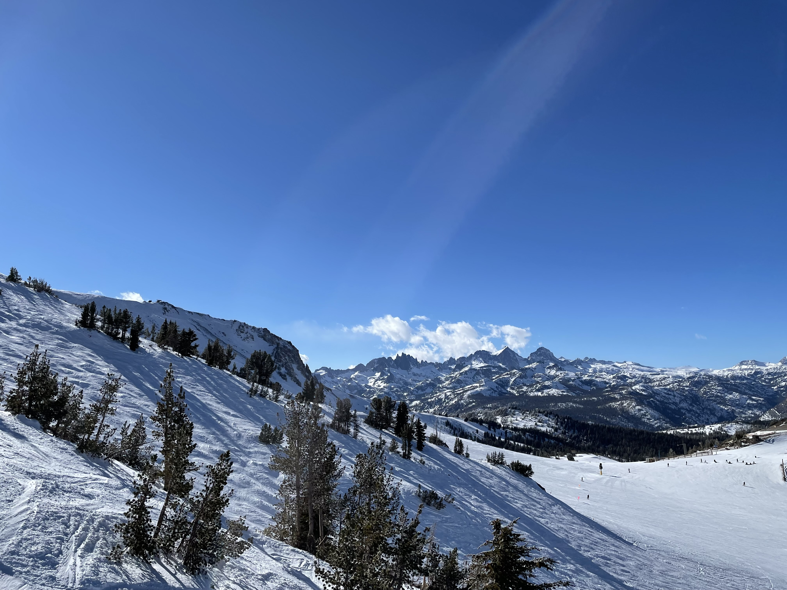

Lab 11
Challenge
Using the basic file structure and the CSS we have learned so far, I made a site with style, structure and organization. Then, using slightly more advanced techniques, I will style my sidebar div and the links div to stick to a specific part of the page.
Problem
No problem!
Results
Here are the results.